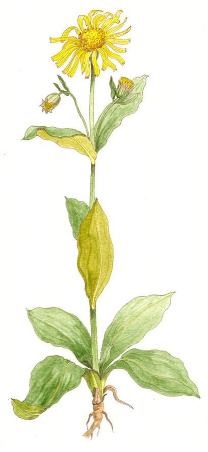

Dorose
dopant (absorption directe) - 10 po
↪ plante - plaine - été
↪ plante - plaine - été
 La dorose est une plante haute qui dépasse les 50 cm et atteint parfois un bon mètre. Ses larges fleurs jaunes font jusqu'à 20 cm de diamètre. Manger son pollen cru au goût d'amande augmente temporairement la perspicacité. Dans certaines cités, les gardes en mangent quand ils questionnent un étranger afin de les aider à deviner ses véritables intentions.
La dorose est une plante haute qui dépasse les 50 cm et atteint parfois un bon mètre. Ses larges fleurs jaunes font jusqu'à 20 cm de diamètre. Manger son pollen cru au goût d'amande augmente temporairement la perspicacité. Dans certaines cités, les gardes en mangent quand ils questionnent un étranger afin de les aider à deviner ses véritables intentions.
Le pollen de dorose octroie un bonus de +1 aux jets de Sagesse (Intuition) pour 1 minute. On peut en manger autant que l'on veut, aucun effet secondaire n'est connu à ce jour.

Illustration reproduite avec l'aimable autorisation de Christine Achard
Illustration reproduite avec l'aimable autorisation de Christine Achard
Recueil des plantes d´AideDD